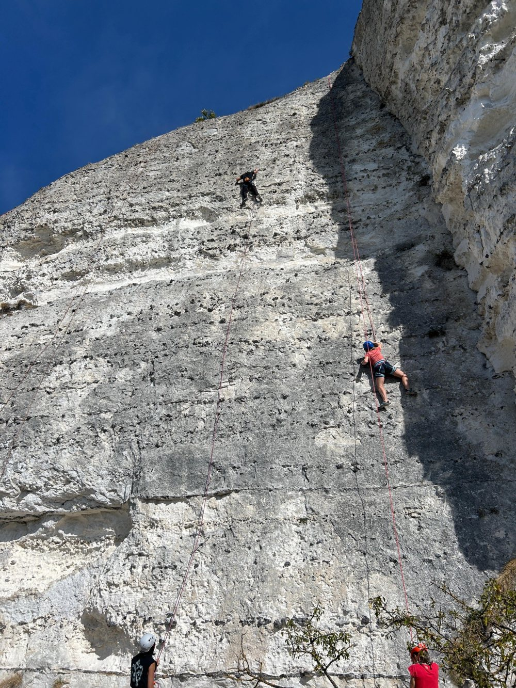
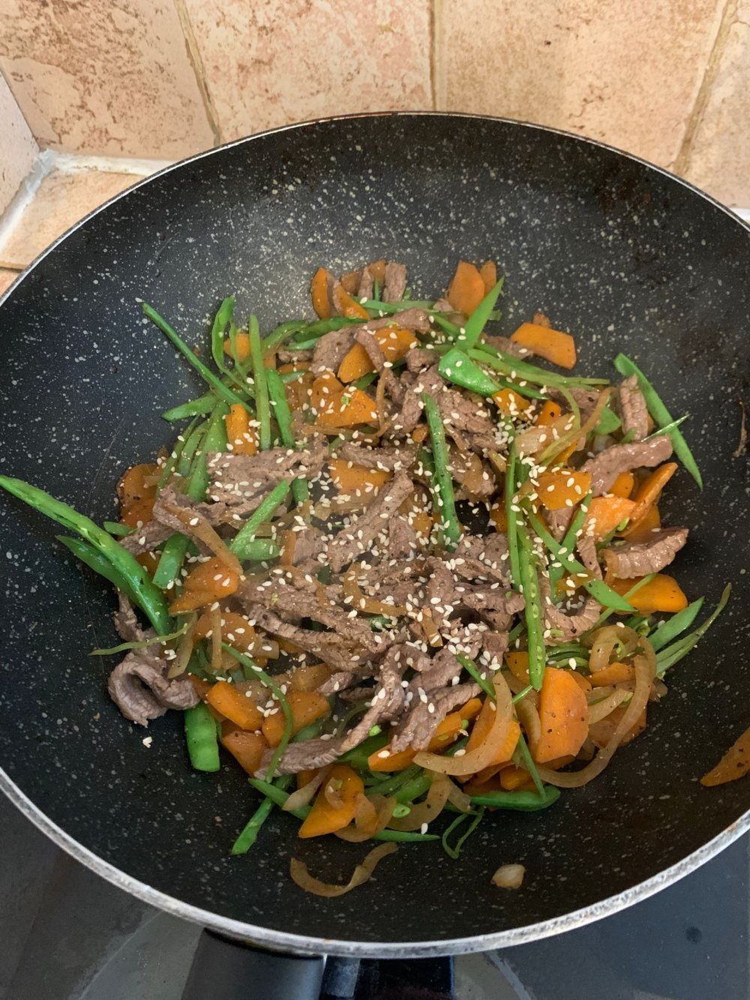

Main research · InstaDeep
Predicting binding affinity with protein-folding models
Fine-tuning protein-folding models to predict binding affinity: modifying their architecture and shifting their confidence-score distributions toward enhanced mutants.
Research Engineer · AI for Biology · InstaDeep
Hi, I’m Vincent! Currently building the future of cancer treatment at InstaDeep.
I conduct AI research at the intersection of deep learning and immunology. My days go into training models that help T cells, the immune system's hunters, recognise cancer cells, and I love the work. On the side, I'm exploring whether Claude can carry out a research project autonomously. A roboticist by training and endlessly curious by nature, I spend my time away from the screen on calisthenics, climbing, cooking and stargazing.

01Research
My day job in InstaDeep’s BioAI team: deep learning that predicts how proteins bind, to help design immune receptors that recognise cancer.
T cells are white blood cells that hunt down infected and cancerous cells. To tell friend from foe, each one uses a receptor (the TCR) to inspect small protein fragments, peptides, that every cell displays on its surface in a holder called MHC.
But natural TCRs often bind them too weakly to trigger an attack, so the tumour slips through.
Changing a single amino acid in the TCR’s binding loops can make it grip much harder, or let go. With 20 amino acids per position, the space of possible variants explodes.
I train deep-learning models to predict how each mutation changes the grip between the receptor and the peptide in its holder (TCR–pMHC binding, in the jargon), so the lab tests the most promising candidates first. Try it yourself →
Loading the 3D structure…
Drag to rotate. The receptor grips the cancer peptide SLLMWITQC (NY-ESO-1) with two loops, CDR3α (pink) and CDR3β (white). Click a residue below, or on a loop, to mutate it.
This loop has 11 mutable positions: 209 possible single mutants, ~21,000 doubles, ~1.3 million triples. Too many to test in a lab, which is why we predict.
Structure: PDB 2BNR (1G4 TCR · NY-ESO-1 · HLA-A*02:01). Binding scores are a toy illustration, not real model predictions.
Main research · InstaDeep
Fine-tuning protein-folding models to predict binding affinity: modifying their architecture and shifting their confidence-score distributions toward enhanced mutants.
Research · InstaDeep
Probing how models represent near-identical sequences, to find the single point mutations that matter.
02Claude lab
Lab notebook · side project at InstaDeep · ongoing
I gave Claude a protein inverse-folding model, a goal (beat ProteinMPNN, a strong published baseline) and a set of instructions, then let it run the research loop on its own: coming up with ideas, writing the code, training, analysing the results, and committing every experiment to GitHub. My job was to improve its instructions.
| Experiment | Best score | What changed |
|---|
The first brief was simple: a flat list of about twenty ideas, long 100-epoch runs, and the test score as the target. Then keep going.
Claude now pushes to git after every experiment, and the brief frames it as working autonomously while I’m asleep: around a hundred experiments overnight.
After every run, it updates a progress plot (kept, discarded or crashed) in a fixed log format, so both of us can see where the research is going.
Per-epoch curves with the ProteinMPNN baseline drawn in, runs cut from 100 to 10 epochs, and fresh ideas pulled from research papers instead of a fixed list.
Training runs in the background while Claude schedules its own check-ins and applies five early-stopping rules:
Quick 5-epoch probes first, to beat a 5-epoch ProteinMPNN. Then 50+ epoch runs to beat the fully pretrained one. Ideas are organised by axis, with explicit permission to be bold.
Mid-loop, we found that the quick evaluation underestimated the full one, and that chasing test scores made decisions slow and noisy. The validation score became the decision metric, with the test set kept for reference only.
After extensive autonomous experimentation, Claude found a configuration that beats ProteinMPNN. Along the way:
03Projects
Things I build to learn and explore, from classic algorithms to small apps.
A browser version of my graph search project, running on a network of neurons. Click a neuron to set the start, another for the goal, then pick an algorithm and watch the signal find its way.
Open source · Python
A web app that optimally assigns trainee magistrates to courts, balancing their ranked wishes against real-world constraints — with validation, analytics and visual results.
Open source · Jupyter
Recovering the app analytics data Apple’s API doesn’t expose, by automating App Store Connect with Selenium.
Venture · 2025
Co-founded an attempt at a conversational voice companion to keep senior citizens connected and less alone.
04Career
BioAI department
Master’s thesis
05Education
General Engineering degree, specialisation in Control Engineering. Mathematics, algorithmics, statistics & optimisation, neuroscience.
Master in Robotics & Automation, double degree with CentraleSupélec. AI, computer vision, non-linear problem solving, robot control.
Classe préparatoire aux grandes écoles — fundamental mathematics, physics and algorithms.
06Life
The things that keep me curious, and keep me sane, away from the GPU queue.


The eighty-six billion neurons inside our heads, and the hundreds of billions of stars above them. I studied neuroscience at CentraleSupélec and online, and I’ve been looking up for as long as I can remember. Both are below, to play with.
The brain · live simulation
This is the Hodgkin–Huxley model (1952), the Nobel-winning equations behind every action potential: sodium rushes in, potassium flows out, and the voltage spikes. Turn up the input current and watch the neuron go from silent to firing rhythmically. Each spike also fires a neuron in this page’s background.
Tip: below about 6 µA/cm² the neuron fires at most once and settles, so give it a zap. Above that, it fires rhythmically, faster the harder you push. The trace runs about 18× slower than real time.
Or press B anywhere.
The cosmos · interactive
A solar system with orbital speeds to scale (Earth takes 24 seconds per lap), 25 constellations, a fact for every planet, and a zoom out all the way to the edge of the observable universe. Drag to rotate, scroll to zoom, click a planet to fly to it.
Or press S anywhere.
Get in touch
Open to conversations about protein ML, research collaborations and new opportunities.
The cosmos
Click and drag to rotate, scroll to zoom, click a planet to fly to it. Keep zooming out to leave the Solar System. Orbital speeds are to scale (Earth: one lap every 24 s); planet sizes and distances are not. From the Milky Way outwards, everything is to scale.
The human brain
Drag to rotate, scroll to zoom, click a region to explore it.